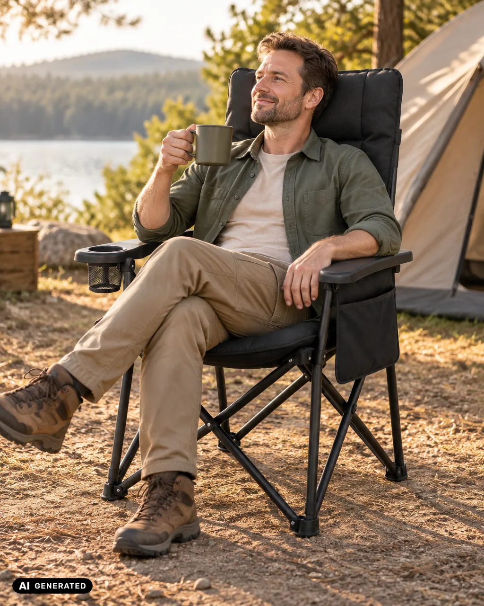
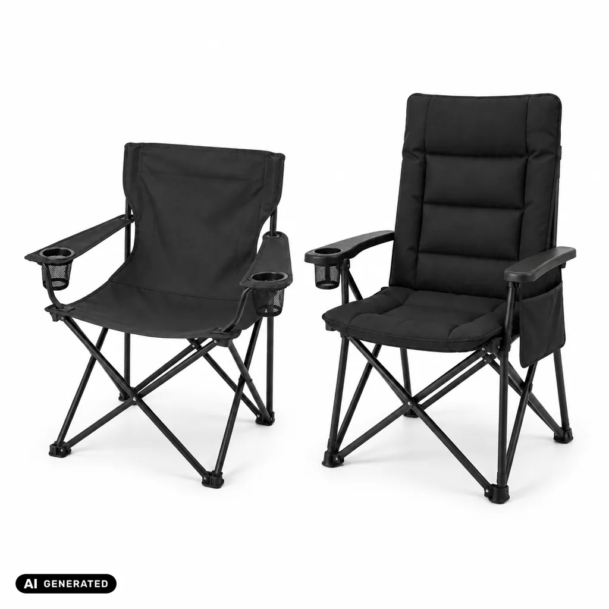
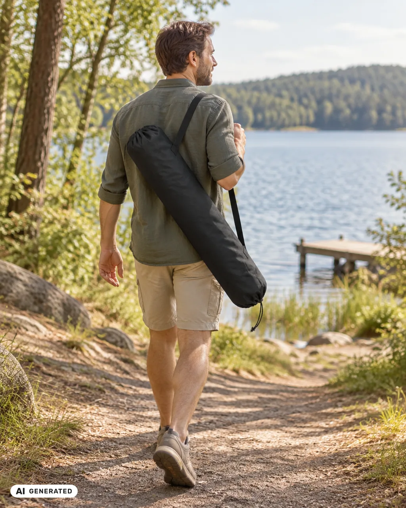
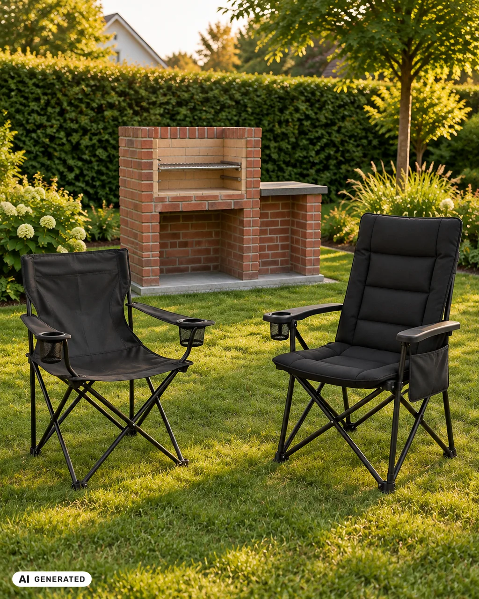

Campingstuhl kaufen: Worauf achten? Der passende Stuhl für dein Projekt

Die Grillstelle steht, das Zelt ist aufgebaut, der Ausflug an den See geplant – jetzt fehlt nur noch der Platz zum Sitzen. In diesem Ratgeber vergleichen wir unsere beiden Campingstühle Kompakt und Komfort, zeigen dir, welcher zu welchem Projekt passt, und wie du deinen Sitzplatz Schritt für Schritt einrichtest. Für die Auswahl brauchst du etwa zehn Minuten und einen Zollstock.
Campingstuhl gepolstert oder faltbar mit gespanntem Bezug?
Beide VELDORIQ-Stühle sind Klappstühle mit X-Gestell: aufklappen, hinsetzen, keine Montage. Der Unterschied liegt darin, wie du sitzt und wie viel du trägst:
- Campingstuhl Kompakt: gespannter Bezug ohne Polster, feste Rückenlehne, 3 kg inkl. Tasche. Für unterwegs, wenn Packmaß und Gewicht zählen.
- Campingstuhl Komfort: 6 cm Polster an Sitz und Lehne, Rückenlehne 3-fach verstellbar, 5,8 kg inkl. Tasche. Für lange Abende, an denen du sitzen bleibst.
Kompakt oder Komfort – der Vergleich

| Merkmal | Campingstuhl Kompakt | Campingstuhl Komfort |
|---|---|---|
| Sitzhöhe | 40 cm | 50 cm |
| Sitzfläche (B × T) | 50 × 40 cm | 51 × 50 cm |
| Maße aufgebaut (B × T × H) | 71 × 51 × 91 cm | 74 × 64 × 109 cm |
| Rückenlehne | fest, nicht verstellbar | 69 cm hoch, 3-fach verstellbar |
| Polster | keins, gespannter Bezug | 6 cm Schaumstoff, Sitz und Lehne |
| Packmaß in der Tasche (L × B × H) | 88 × 18 × 18 cm | 90 × 28 × 26 cm |
| Gewicht inkl. Tasche | 3 kg | 5,8 kg |
| Belastbarkeit | 120 kg | 150 kg |
| Bezug | Polyester-Gewebe, wasserabweisend, nicht wasserdicht | Polyester-Gewebe, wasserabweisend, nicht wasserdicht |
| Extras | 2 Getränkehalter in den Armlehnen | Getränkehalter, Seitentasche |
| Lieferumfang | Stuhl, Tragetasche mit Schultergurt | Stuhl, Tragetasche |
| Farbe | Schwarz | Schwarz |
Welcher Campingstuhl ist bequem – und für welches Projekt?

Bequem heißt für jeden etwas anderes. Frag dich vor allem: Wie lange sitzt du – und wie weit trägst du den Stuhl?
- Grillabend an der eigenen Grillstelle: Beide passen. Für einen langen Abend mit der Familie ist der Komfort die bequemere Wahl, für spontane Gäste hast du den Kompakt schnell aufgeklappt.
- Lange Stunden am Zelt: Hier spielt der Komfort seine Stärken aus – Polster, hohe Lehne zum Anlehnen und eine Seitentasche für Kleinkram.
- Tagesausflug an den See, Angeln am Fluss, Open-Air-Konzert im Park: Wenn du den Stuhl ein Stück tragen musst, ist der Kompakt die praktischere Wahl. Mit Schultergurt über der Schulter bleiben deine Hände frei für Kühltasche oder Picknickdecke.
- Wochenende am See: Beide passen – je nachdem, ob du mehr Wert auf Sitzkomfort oder auf Platz im Kofferraum legst.
Das solltest du vorher wissen
- Kofferraum ausmessen: Zusammengeklappt in der Tasche ist der Kompakt 88 cm lang, der Komfort 90 cm. Miss vorher kurz nach, ob die Länge in deinen Kofferraum passt – vor allem, wenn mehrere Stühle mitsollen.
- Belastbarkeit beachten: Der Kompakt ist bis 120 kg ausgelegt, der Komfort bis 150 kg.
- Campingstuhl Sitzhöhe: Der Kompakt hat 40 cm, der Komfort 50 cm Sitzhöhe. Probier aus, welche Höhe dir angenehm ist, und denk an den Tisch, an dem du sitzen möchtest.
- Regen: Die Bezüge sind wasserabweisend, aber nicht wasserdicht. Bei Regen stellst du die Stühle besser unters Vordach oder klappst sie zusammen.
- Feuer: Die Bezüge sind aus Polyester-Gewebe. Stell die Stühle mit Abstand zu Grill, Feuerstelle und Funkenflug auf.
Sitzplatz einrichten – Schritt für Schritt

- Platz wählen. Such dir eine ebene Fläche: Rasen, festen Sand oder Pflaster. Auf schrägem Boden steht ein Stuhl weniger sicher.
- Abstand halten. An der Grillstelle oder Feuerstelle stellst du die Stühle so auf, dass Glut und Funken sie nicht erreichen. Achte auch auf den Wind: Der Rauch soll nicht direkt zu euch ziehen.
- Stuhl aufklappen. Nimm den Stuhl aus der Tasche und zieh das Gestell auseinander. Beim Kompakt klappt die Rückenlehne gleich mit auf. Montage und Werkzeug brauchst du bei beiden nicht.
- Lehne einstellen. Beim Komfort stellst du die Rückenlehne in eine der drei Stufen. Probier kurz aus, welche Stufe dir zum Essen und welche zum Entspannen passt.
- Alles griffbereit. Getränk in den Halter, Handy oder Taschenlampe beim Komfort in die Seitentasche – so musst du nicht ständig aufstehen.
- Zusammenklappen und verstauen. Klapp den Stuhl nach dem Einsatz zusammen und verstau ihn in der Tragetasche. Ist der Bezug feucht geworden, lass ihn vorher trocknen.
Praxistipp von Nelia: „Setz dich vor dem ersten Ausflug einmal zu Hause an deinen Tisch. Dann merkst du sofort, ob die Sitzhöhe passt – und musst nicht am Campingplatz improvisieren.“
Häufige Fehler
- Nur aufs Polster schauen: Wer den Stuhl weit trägt, merkt jedes Kilo – vergleiche das Gewicht inkl. Tasche.
- Packmaß vergessen: Ein Stuhl, der nicht in den Kofferraum passt, bleibt zu Hause.
- Zu nah ans Feuer stellen: Polyester-Bezüge gehören nicht in die Nähe von Glut.
- Auf schrägem Boden aufstellen: Der Stuhl steht weniger sicher.
- Belastbarkeit nicht prüfen: Achte darauf, dass der Stuhl für dein Gewicht ausgelegt ist.
Häufige Fragen
Campingstuhl kaufen: Worauf achten?
Auf Sitzhöhe, Packmaß, Gewicht inkl. Tasche, Belastbarkeit und darauf, ob du gepolstert oder auf gespanntem Bezug sitzen möchtest.
Welcher Campingstuhl ist bequem für lange Abende?
Bei uns ist es der Campingstuhl Komfort: 6 cm Polster an Sitz und Lehne, Rückenlehne 69 cm hoch und 3-fach verstellbar.
Welcher Campingstuhl ist besser zum Tragen?
Der Campingstuhl Kompakt: 3 kg inkl. Tasche, mit Schultergurt zum Umhängen.
Welche Sitzhöhe hat ein Campingstuhl?
Das ist je nach Modell verschieden. Unser Kompakt hat 40 cm, unser Komfort 50 cm Sitzhöhe.
Kann ich die Stühle im Regen stehen lassen?
Die Bezüge sind wasserabweisend, aber nicht wasserdicht. Stell sie bei Regen unter oder klapp sie zusammen.
Passt zu deinem Projekt
- Campingstuhl Kompakt – faltbar, 3 kg inkl. Tasche, bis 120 kg, Packmaß 88 × 18 × 18 cm
- Campingstuhl Komfort – gepolstert, Lehne 3-fach verstellbar, bis 150 kg, Sitzhöhe 50 cm
- Ratgeber: Eigene Grillstelle bauen – der Platz, an dem deine Stühle stehen
- Campingtisch Klein · Campingtisch Groß – folgt
Dein Platz wartet
Ob Grillabend im Garten oder Wochenende am Zelt: Mit dem passenden Stuhl wird dein Projekt erst zum Lieblingsplatz. Überleg dir, wie lange du sitzt und wie weit du trägst – dann weißt du, welcher Stuhl zu dir passt.